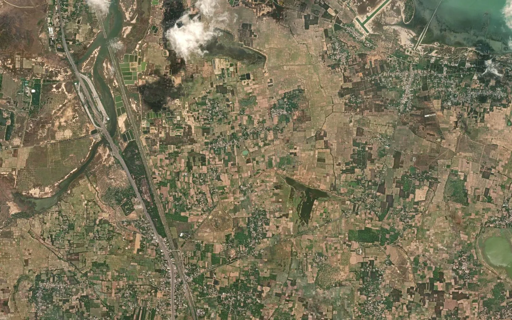

Tamil Nadu survey number map: patta, chitta and FMB explained

In Tamil Nadu, a parcel of land is identified by the district, the taluk, the revenue village, the survey number and the subdivision number. The village map shows where each survey number lies, while the patta, the chitta and the A-register say who holds it, how large it is and how it is classified. This guide explains how these fit together and what is needed when survey numbers must be seen on a satellite image or used in a GIS or CAD file.
1. Where the map and the record come from
Tamil Nadu land records are maintained by the Revenue Department and the Survey and Settlement Department. The revenue office is the right place to start for any survey number, and its record is what counts in a transaction.
2. The terms you will meet
- Survey number and subdivision: written like 123/4A, where 123 is the survey number and 4A the subdivision.
- Patta: the record of the holder of a parcel, with survey numbers and extent.
- Chitta: an extract of the village account showing the holdings and their land type.
- A-register: the village register of land, including government land.
- FMB sketch: the Field Measurement Book drawing of one survey number, with its dimensions.
- Town survey (TS) number: used in notified urban areas in place of the revenue survey number.
3. Reading the village map
The village map shows survey numbers, subdivision lines, roads, tanks, channels and streams. Many Tamil Nadu villages have a large number of subdivisions, and old sheets may not show every later split. The FMB sketch of a survey number is more detailed than the village sheet, so when a boundary matters, compare the two.
Our guide on the FMB sketch and the village map explains the difference.
4. Linking the map to the patta and chitta
Take the survey number and subdivision from the map, choose the same district, taluk and village in the land record, and search. The record gives the extent, the classification and the holder. Changes after a sale, gift or inheritance come through mutation, so read the latest record and use the full subdivision number rather than only the main survey number.
5. Area: cents, acres and hectares
Records give area in hectare, are and square metre, while local deals use the cent and the acre. One cent is about 40.47 square metres, and 100 cents make one acre, about 0.405 hectare. Convert from the recorded value and state the unit in any land schedule.
6. Government land and land type
The record shows classes such as wet land, dry land and poramboke land, which is government or public land such as tanks, channels and grazing land. These classes are written in the record and not on the map, so the map alone cannot tell you which survey numbers are poramboke. Read the current record of each survey number before relying on it.
Our guide on checking government land in a village covers the wider method.
7. Why a viewer map is not yet a GIS map
A map on a screen is good for finding a survey number, but it is not a file you can open with GPS points or a project layout. For that, the map must be georeferenced, meaning fitted to real coordinates such as WGS 84 latitude / longitude or UTM zone 44N metres, and every survey number digitized as a closed polygon carrying its number. The result should then be checked on satellite imagery: roads, tank bunds and field edges seen from above should sit on the survey lines across the whole village.
8. Common uses
- Seeing a survey number on a satellite image in Google Earth
- Listing the survey numbers inside a solar, wind or industrial site
- Listing the survey numbers crossed by a road, pipeline or transmission line route
- Preparing a survey-wise land schedule with village, survey number, area and land type
9. Limits to keep in mind
The village map shows the survey as drawn, and the ground has often changed since. Neighbouring village maps do not always agree exactly along the shared edge. A digitized map is a planning base, not proof of title. The revenue record remains the legal source, and where a line decides ownership or compensation, a DGPS or Total Station survey on the ground is the next step.
10. What we deliver
We turn the Tamil Nadu village map into a georeferenced GIS file: every survey number as a numbered polygon, checked against satellite imagery, with the village boundary inside the same files, in KML for Google Earth, DWG / DXF for AutoCAD, SHP for QGIS or ArcGIS and an Excel list of survey numbers and areas. BHU-NETRA Map Service is a private service and is not connected with any state government.
See the Tamil Nadu survey number map page, check your village with the village checker, read the Kerala survey number guide and land-record terms of each state, or ask for a quotation.
Need khasra maps or a survey?
Georeferenced and digitized khasra maps in KML, DWG, SHP and Excel for 20 states, plus DGPS, Total Station, topographic and drone surveys. Single village orders welcome.